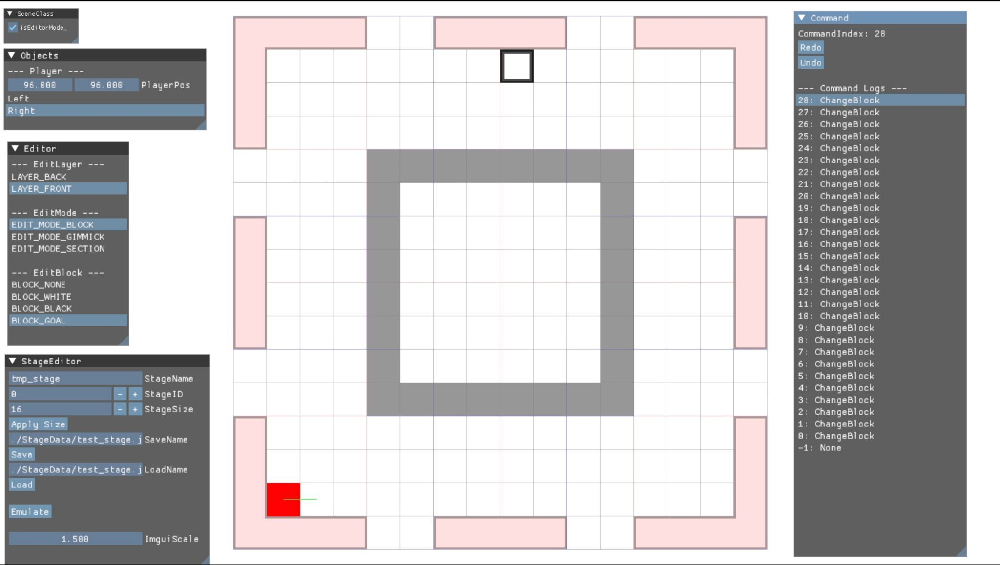

回転方向をアニメーションで伝える
瞬間的な回転だけでは、どちらへ動いたかが伝わりにくいことが課題でした。内部のステージ状態は瞬時に切り替えつつ、回転する部分の見た目にアニメーションを付けて、プレイヤーが変化を追えるようにしました。
WORK 02 / 1年次 / 3人チーム
ステージの回転を使ったパズルアクションです。プレイヤーやステージの挙動を含むインゲーム全体を担当し、チームメンバーがステージを制作するための専用エディターも用意しました。
ZIP · 9.8 MiB · KurukuruLayer.zip
ZIPを展開し、同梱の実行ファイルを起動してください。操作方法や必要な環境は、同梱の説明を確認してください。
配布ファイル一覧を見る（新しいタブ）
PROJECT INFORMATION
| 入力方法 | 対応 |
|---|---|
| キーボード | 対応 |
| マウス併用 | キーボードと併用 |
| Xboxコントローラー | 対応 |
コントローラーの表記はXboxコントローラーを指します。全作品でキーボード操作に対応。— は対応する操作として掲載していない入力です。キーボードで遊ぶ際はマウスも使用します。
学科内評価 1 / 67位。ゲームクリエイター甲子園2025 総合大賞セミファイナル。
作品の配布ページを見る（新しいタブ）MY CONTRIBUTION
瞬間的な回転だけでは、どちらへ動いたかが伝わりにくいことが課題でした。内部のステージ状態は瞬時に切り替えつつ、回転する部分の見た目にアニメーションを付けて、プレイヤーが変化を追えるようにしました。
ステージ外へ出てしまった際には、最後に着地した瞬間のステージ形状を復元し、その着地点に復活する仕組みを実装しました。
専用エディターをチームへ提供し、メンバーにステージを制作してもらいました。遊びの仕組みと、それを配置・調整する制作環境をセットで用意しています。
STAGE EDITOR
チームのステージ制作に使用した専用エディター。レイヤーやブロックの編集、ステージの保存・読み込みを行う画面です。
